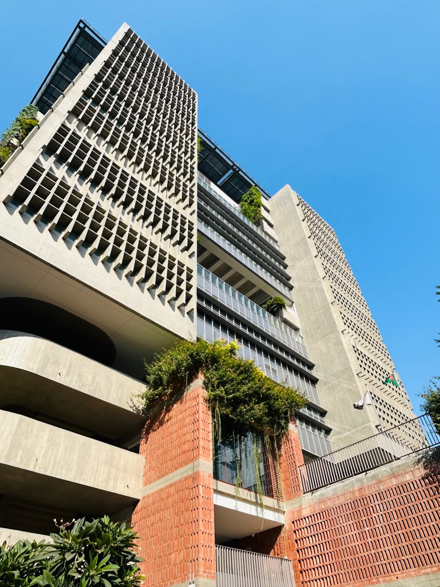
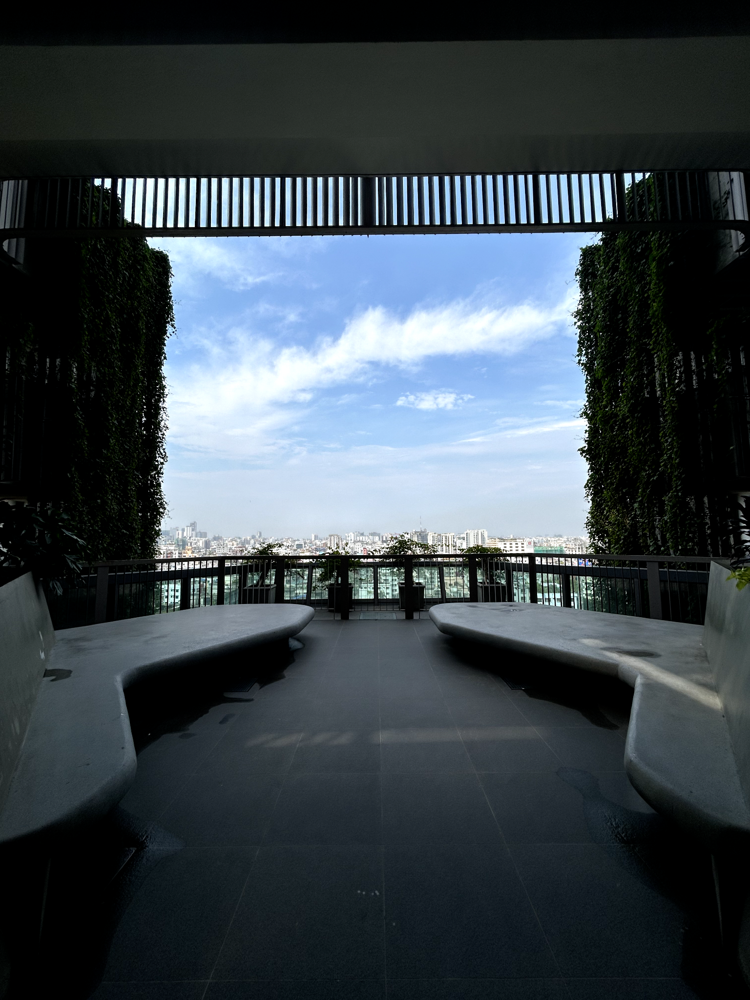
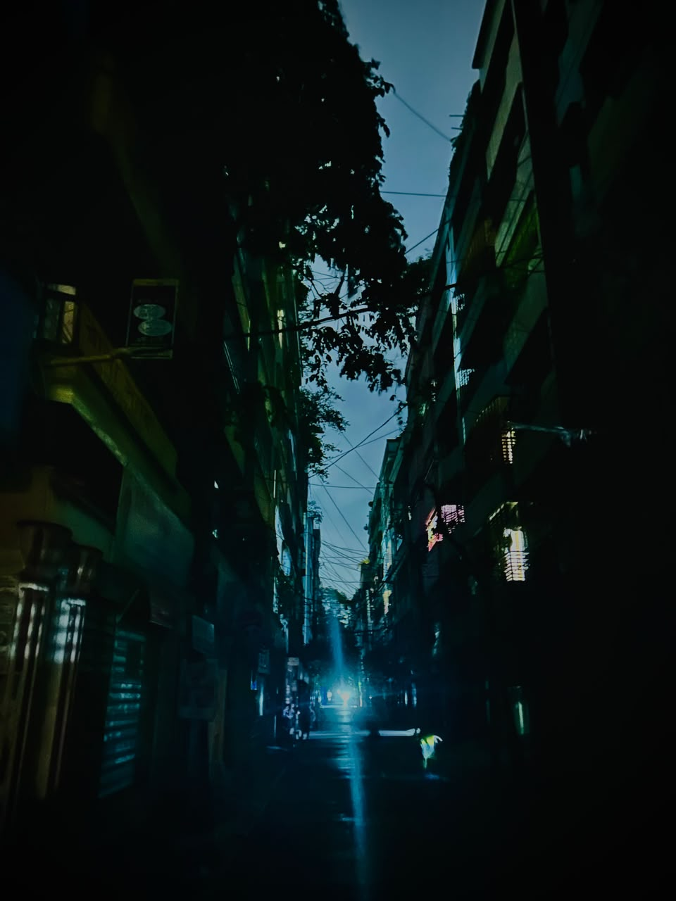
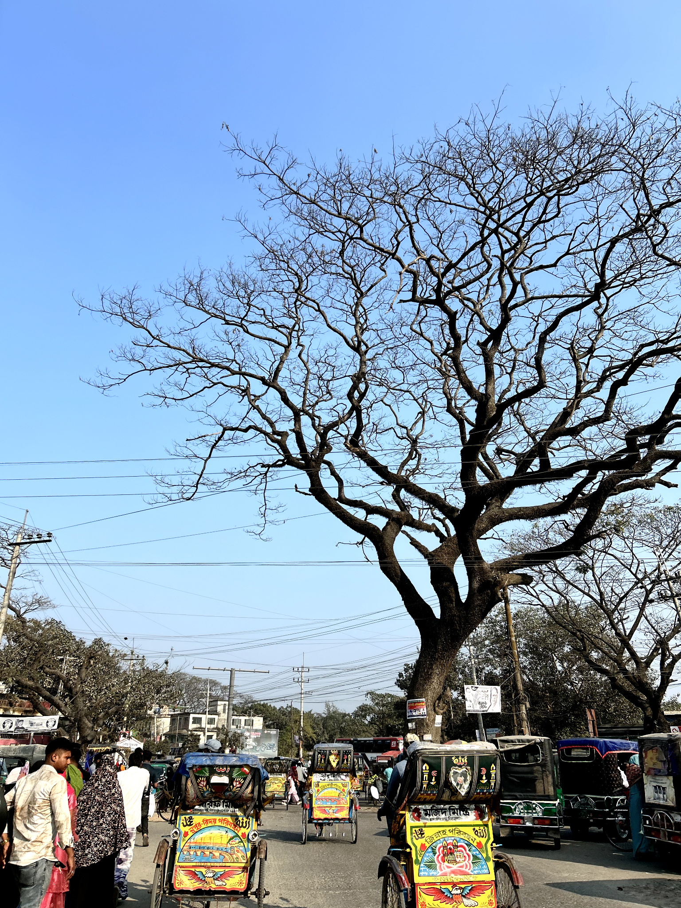
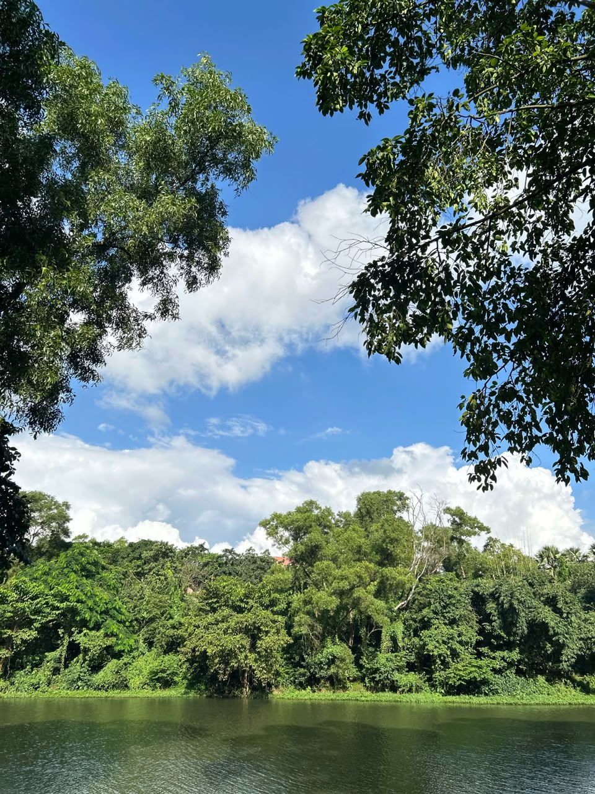
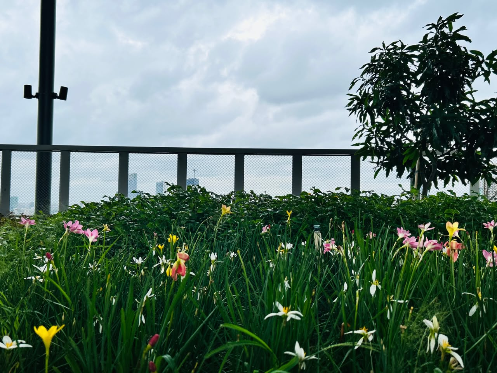
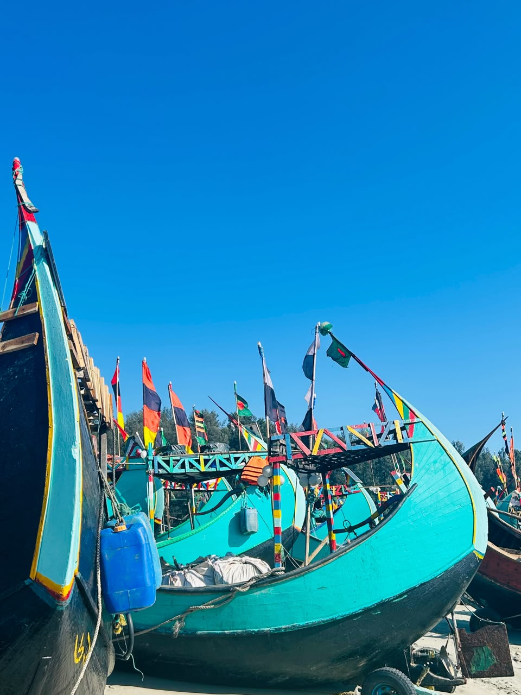
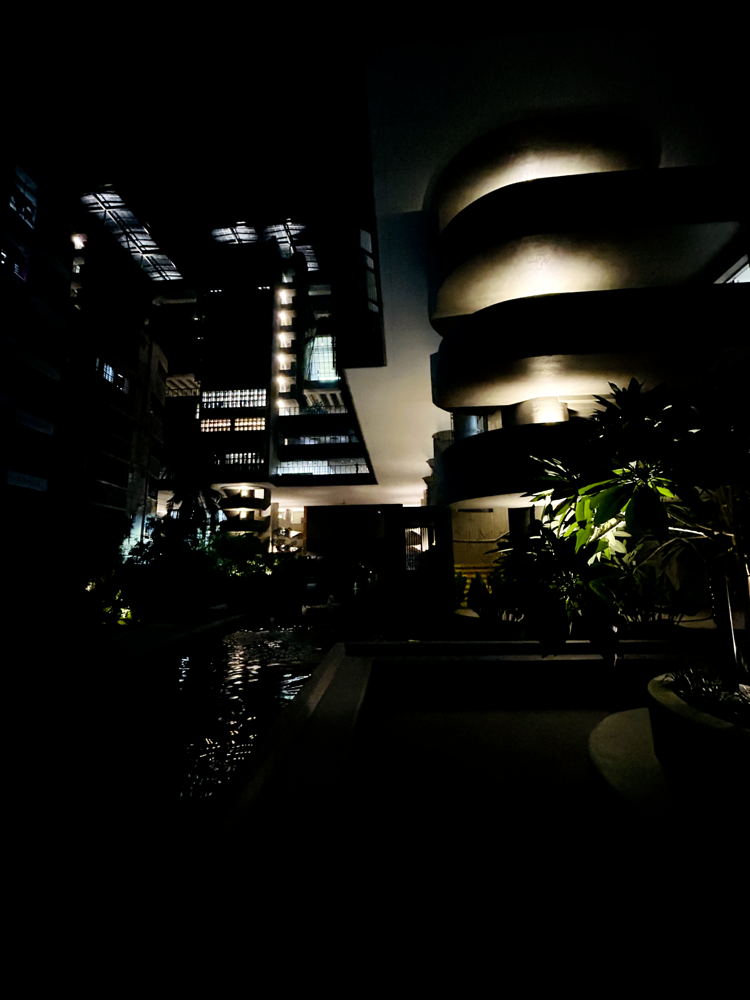

Visual journal
Observation, carefully curated.
Original photographs from my own archive. The selection is limited to images that support themes of architecture, urban systems, environment and coastal landscapes.
Curated collection
Fewer images, stronger relationships.
Each photograph has a purpose and caption. Casual duplicates and unrelated personal memories are excluded from the professional narrative.












